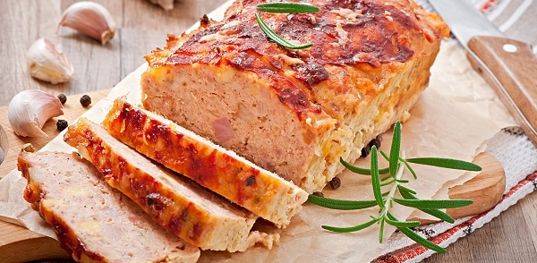

gehaktbrood
de gehaktbrood kan prima bij een avondmaal, maar is ook een makkelijk gerecht voor een buffet
ingredienten
- 1 rode paprika
- 70 g tomatenpuree (blikje)
- 1 middelgroot ei
- 450 g half-om-halfgehakt
- 150 g paneermeel (pakje)
- 1 teen knoflook
bereidinswijze
- 1. warm de oven voor op 175 graden celcius
- 2. Maak de paprika's schoon en snijd ze in kleine stukjes. Maak de ui schoon en snijd deze fijn. Maak de
knoflook schoon. Snijd de bacon in dunne reepjes. Hak de peterselie fijn.
- 3. Doe het gehakt, paprika, ui, bacon, peterselie, paneermeel, ei, tomatenpuree, tabasco en peper in een
kom. Pers de tenen knoflook erboven uit en kneed goed totdat alle ingrediënten zijn gemengd.
- 4. Druk het mengsel in een cakevorm en bak deze ongeveer 1 uur in de oven.
- 5. Haal de vorm uit de oven. Laat even afkoelen en haal het daarna uit de vorm. serveer het gehaktbrood
op een schotel.

voorgerecht
nagerecht